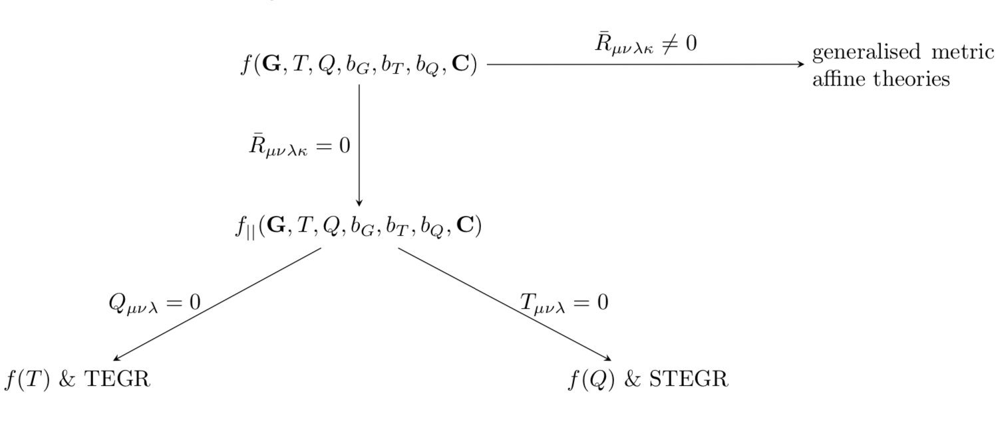
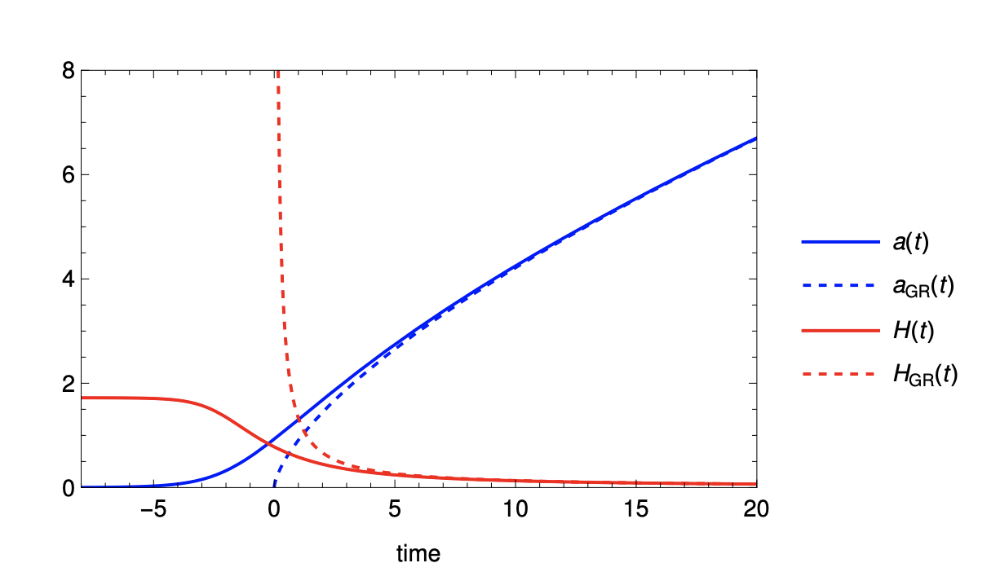

Research
My research is broadly based on understanding the dark sector and the gravitational theories used to describe our Universe. I work on the construction of cosmological models, their mathematical consistency, and their consequences for observations.
Interactions in the dark sector
Dark matter and dark energy are usually treated as separate, non-interacting components. I'm interested in what happens when this assumption is relaxed, and in constructing interactions directly at the level of the action. This allows the background equations and perturbations to be derived within the same framework.
A particular focus of my recent work is momentum exchange between dark matter and scalar field dark energy. These interactions can change how matter clusters without changing the background expansion. This makes large-scale structure an important way to distinguish models that would otherwise have the same expansion history.
In my work with Elsa Teixeira and Vivian Poulin, we introduced interactions involving the intrinsic entropy of dark matter. The entropy perturbations modify the dark matter Euler equation at linear order while leaving its continuity equation unchanged. I am also investigating how these types of interactions should be described beyond linear perturbation theory, and how their nonlinear dynamics depend on the underlying action.
Intrinsic entropy couplings · Relativistic interacting fluids
Cosmological fluids, thermodynamics and effective field theory
Fluid descriptions are used throughout cosmology, but their underlying degrees of freedom and thermodynamic assumptions are not always explicit. I work with variational formulations of relativistic fluids, including the Brown and Schutz approaches, and their relation to effective field theories of cosmological media.
I'm particularly interested in how entropy, particle number and fluid motion enter the action, and what happens when they couple to scalar fields or curvature. A central part of this work is checking perturbative stability: a model with an interesting expansion history is only useful if its fluctuations are physically well behaved.
My recent work on non-minimal fluid Lagrangian couplings examines how the choice of fluid formulation affects the equations of motion and the interpretation of effective thermodynamic quantities. Current directions include the stability of coupled fluid and scalar systems, and the conditions under which they can describe accelerated expansion.
Non-minimal fluid Lagrangian couplings · Relativistic interacting fluids
Geometric modifications of gravity
My PhD focussed on geometric extensions of General Relativity, particularly theories involving curvature, torsion and nonmetricity. I studied the relations between these descriptions and the role of boundary terms, local Lorentz invariance and diffeomorphism invariance.
This work led to a unified approach to several modified gravity models, including extensions of teleparallel and symmetric teleparallel gravity. I have also studied spatial curvature in coincident gauge f(Q) cosmology, and how the choice of geometry relates to the cosmological equations.
More recently, with Lehel Csillag, I investigated a geometric formulation of purely kinetic k-essence. This connects an extension of the spacetime geometry to a scalar field description of dark energy, which can be studied using stability conditions and cosmological data.


Spatial curvature in f(Q) cosmology · Geometric k-essence · PhD thesis
Cosmological dynamics and observations
I use dynamical systems methods to understand the possible evolution of cosmological models and identify their early- and late-time behaviour. Together with perturbative stability conditions, these methods help distinguish viable solutions from trajectories that are mathematically allowed but physically problematic.
To connect these models with observations, I work with cosmological perturbation theory, CLASS, Cobaya and Bayesian parameter inference. I'm interested in combining theoretical consistency conditions with measurements of the expansion history, the cosmic microwave background and the growth of structure.
My earlier MSc work with Prof. Edmund Copeland at Nottingham studied scalar field cosmology using dynamical systems, including models motivated by high-energy physics.
Non-minimally coupled fluids and scalar fields · Dynamical systems in modified gravity · MSc thesis